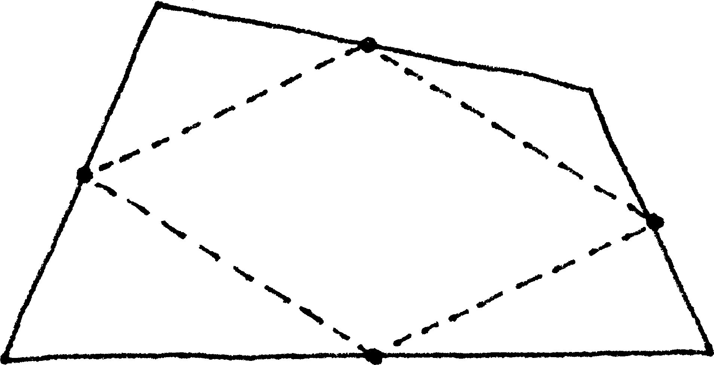
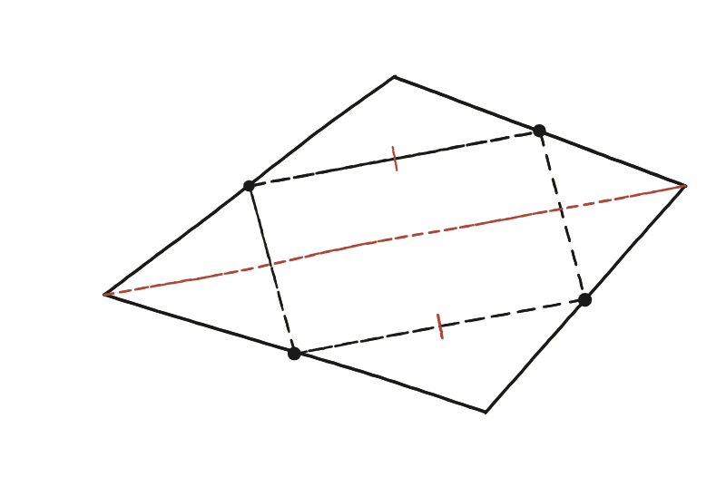

Demostra que, en unir els punts mitjans dels costats d'una figura de quatre costats qualsevol, s'obté un paral·lelogram. Quina és la seva àrea?

Reduir la feina a la meitat
Per demostrar que una figura de quatre costats és un paral·lelogram, no cal comprovar els quatre costats: n'hi ha prou que un sol parell de costats oposats siguin alhora paral·lels i de la mateixa llargada. Si això passa, l'altre parell ho és automàticament.
Un quadrilàter del qual no se sap res
El quadrilàter original de la figura no té cap propietat especial: no és cap forma coneguda, no té angles rectes ni costats iguals. No es pot raonar directament sobre ell. Cal una línia auxiliar que el converteixi en formes de les quals sí que se sap alguna cosa.
La diagonal, que crea dos triangles
Traçant una de les diagonals del quadrilàter original, aquest queda dividit en dos triangles, cadascun amb la diagonal com a costat comú. Dos dels quatre punts mitjans marcats són, precisament, els punts mitjans de dos costats d'un d'aquests triangles; els altres dos, els punts mitjans de dos costats de l'altre triangle.

El mateix segment mitjà, dues vegades
En cada triangle, el segment que uneix els punts mitjans de dos costats és paral·lel al tercer costat i en fa la meitat —el mateix teorema del segment mitjà ja fet servir a la Qüestió 2. Aquí, però, el "tercer costat" és el mateix als dos triangles: la diagonal comuna. Per tant, els dos segments que uneixen punts mitjans —un de cada triangle— són tots dos paral·lels a aquesta mateixa diagonal i en fan, tots dos, exactament la meitat: són paral·lels entre si i de la mateixa llargada. Aquest és el parell de costats oposats que calia trobar: el quadrilàter dels punts mitjans és un paral·lelogram.
L'àrea: la meitat de l'original
Per a l'àrea calen les dues diagonals, no només una: amb una de sola l'argument no es tanca. Anomenem ABCD el quadrilàter i P, Q, R, S els punts mitjans de AB, BC, CD i DA. El paral·lelogram interior és PQRS; el que li sobra són els quatre triangles de les cantonades, APS, BQP, CRQ i DSR.
Es compten per parelles. El triangle APS té dos costats que fan la meitat de AB i de AD, amb el mateix angle A entremig: és semblant al triangle ABD amb raó ½, i per tant en té ¼ de l'àrea. El mateix val per a CRQ respecte del triangle CBD. Sumant-los: [APS]+[CRQ] = ¼([ABD]+[CBD]) = ¼ de tot el quadrilàter, perquè aquells dos triangles el parteixen sencer per la diagonal BD.
Repetint exactament el mateix amb l'altra parella i l'altra diagonal: [BQP]+[DSR] = ¼([BAC]+[DAC]) = ¼ del quadrilàter. Les quatre cantonades sumen, doncs, ¼+¼ = la meitat, i el que queda per al paral·lelogram és l'altra meitat. Sigui quina sigui la forma del quadrilàter original.
Sí, sempre és un paral·lelogram: una diagonal del quadrilàter original crea dos triangles, i el teorema del segment mitjà aplicat a tots dos alhora produeix dos costats del quadrilàter interior que són, per força, paral·lels entre si i iguals de llargs —tots dos són paral·lels a la mateixa diagonal i en fan la meitat. La seva àrea és sempre exactament la meitat de la del quadrilàter original —i això últim demana les dues diagonals, no una: els quatre triangles de les cantonades es compten en dues parelles, cadascuna d'un quart.
Comprovació
Amb A(0,0), B(8,2), C(9,7), D(1,6): els punts mitjans surten (4,1), (8,5;4,5), (5;6,5) i (0,5;3). El vector del primer al segon, (4,5;3,5), és idèntic al del quart al tercer —confirmant el paral·lelisme i la igualtat de longitud per coordenades. Aquesta comprovació és una demostració vàlida per si sola, però només confirma que és cert, no explica per què —a diferència de l'argument de la diagonal, que sí ho fa (i, de fet, ni tan sols necessita que els quatre punts estiguin en un mateix pla: funciona igual amb un quadrilàter tort a l'espai).